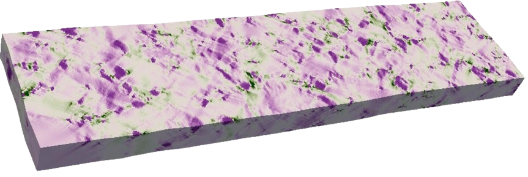
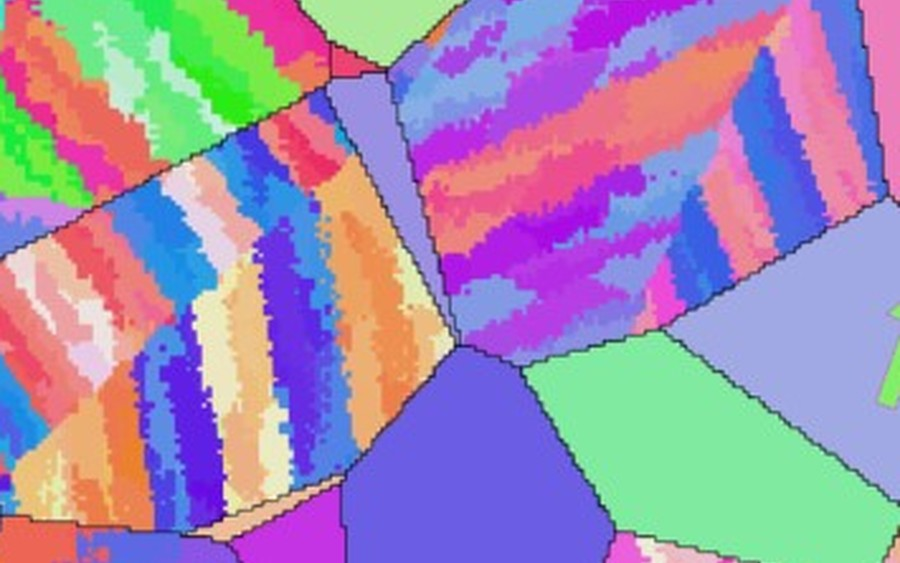
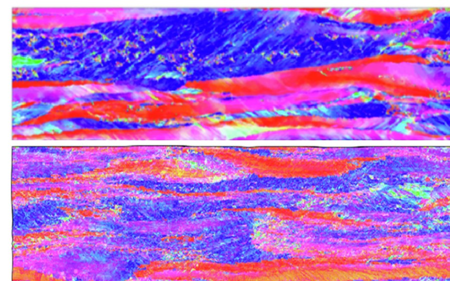
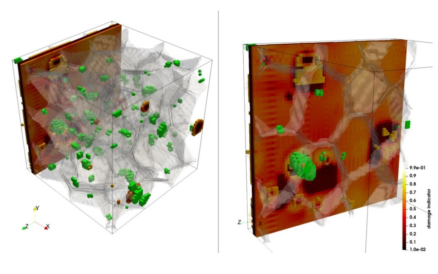

Specialist Setup Knowledge
Setting up multi-physics simulations requires deep domain expertise to define models, material parameters, boundary conditions, and validation steps correctly.
As a team of DAMASK developers and experts, we build customized, ready-to-run simulation workflows for multi-physics materials modelling.
Let your team focus on innovation, not troubleshooting.

The Challenge
As materials become more complex, more physics phenomena start depending on each other. Understanding these interdependent phenomena through advanced multi-physics modelling is key to understanding and unlocking advanced material properties. However, implementing simulation workflows involving tools like DAMASK usually comes with steep hurdles.
Setting up multi-physics simulations requires deep domain expertise to define models, material parameters, boundary conditions, and validation steps correctly.
Connecting experimental data, microstructure generation, simulation runs, and post-processing into a reliable, flexible and easily maintainable ICME workflow is challenging and time-consuming.
Multi-physics simulations are powerful, but computationally demanding and require in-depth expert analyses to interpret.
Our Approach
We translate those challenges into customized DAMASK workflows that are structured, documented, and ready to run in our cloud or on your own infrastructure.
We build validated pipelines for your alloy system, material parameters, boundary conditions, geometry setup, simulation execution, and validation path.
We connect experimental inputs, microstructure or geometry generation, DAMASK runs, and post-processing outputs into one coherent workflow.
We design practical run configurations, scaling approaches, and workflow shortcuts for your workstation, server, or cluster environment.
Use Cases
Every workflow starts from the real state of a material, applies a process-relevant loading path, and returns outputs you can put next to an experiment — from microstructure-resolved stress and strain to texture evolution, coupled degradation, and damage.

Micromechanics
EBSD-informed stress and strain fields that show how load partitions and where deformation localizes — down to complex packet structures.
Explore
Process studies
Texture evolution followed across the full rolling and forming route — comparing routes and pinpointing the process window worth an experiment.
ExploreCoupled physics
Hydrogen-assisted fracture and related degradation studied as coupled problems, so mechanics and chemistry inform the same interpretation.
Explore
Virtual testing
Damage workflows built up from benchmark validation to realistic microstructures and loading paths that approach component-relevant conditions.
ExploreThe engagement is designed to reduce uncertainty before implementation and leave your team with a workflow they can actually operate.
01 (~1 week)
We review your material system, simulation goals, available data, and computing environment.
02 (~2 weeks)
We define the DAMASK workflow, inputs, automation steps, validation approach, and handover format.
03
You receive a ready-to-run cloudbased- or local workflow with documentation, example runs, and adoption support.
We are not just software developers; we are materials scientists and simulation experts with backgrounds in academia and industry. Our team includes DAMASK developers, which helps us connect the simulation world to real-world material science applications.
With broad experience across diverse multiphysics domains, we understand the physics behind the code. We translate complex material behavior into robust, reproducible digital workflows, giving your team PhD-level capabilities from day one.
Typical Deliverables
Automation scripts, configuration templates, documentation, example runs, and post-processing outputs.
Application Areas
Alloys, forming, microstructure-property links, thermo-mechanical coupling, and crystal plasticity studies.
Infrastructure Fit
Workflows can be configured for your own workstation, internal server, or cluster environment.
Share your current simulation challenge, material system, and infrastructure. We will identify where a custom DAMASK workflow could save time, reduce setup risk, or improve reproducibility.